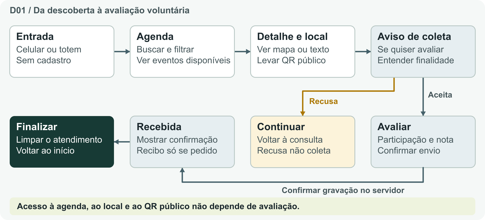
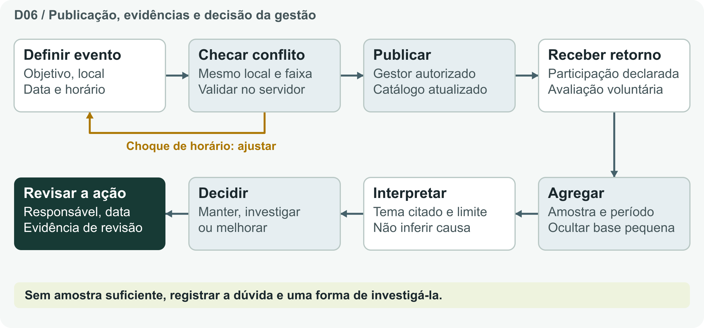
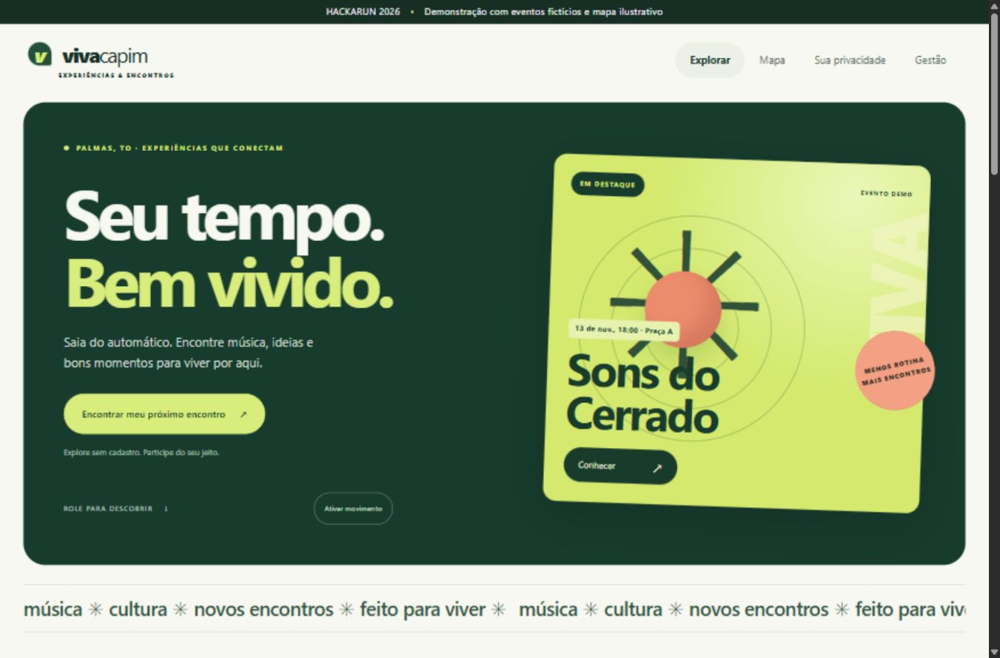
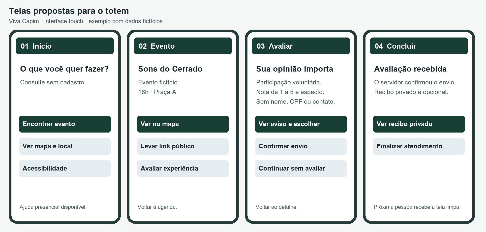

Equipe Onix - 35 · HackaRun 2026 · Missão 1
Produto e requisitos
O desafio é melhorar planejamento, participação e avaliação de experiências no shopping. A solução liga agenda e orientação sem conta ao retorno voluntário; a gestão consulta resultados agregados para registrar uma próxima ação.
| Público | Objetivo |
|---|---|
| Visitante | Encontrar atividade e local; consultar ou avaliar por escolha. |
| Marketing/eventos | Programar sem choque, ver amostra e revisar melhoria. |
| Operação/TI | Validar ponto, conteúdo, rede e troca segura de visitante. |
Jornada do visitante e ciclo da gestão


Telas


- Web: abertura com experiência em destaque, motion pausável, busca, filtro e rolagem por lotes com fim.
- Touch: consulta curta, botões grandes, orientação por texto, avaliação opcional e retorno ao início.
- Anexos: PROPOSTA_VISUAL_2026.png e Telas_do_Totem.png. Identificar os dados como fictícios.
Canvas
| Bloco | Hipótese |
|---|---|
| Segmentos de clientes | Gestão de eventos/marketing do shopping como potencial contratante; visitantes como usuários finais; operação/TI como usuários de suporte. |
| Proposta de valor | Conectar descoberta e orientação à aprendizagem dos eventos, com consulta sem cadastro e dados mínimos para avaliação. |
| Canais | Web responsiva, link no canal oficial, QR público e totem touch. NFC e inclusão no app existente dependem de validação e autorização. |
| Relacionamento | Autoatendimento com ajuda presencial; suporte operacional para gestores; canal real para direitos de dados antes do piloto. |
| Fontes de receita | Hipótese de contratação B2B por implantação e manutenção. Primeiro piloto mede utilidade; sem preço ou venda de dados pessoais. |
| Recursos principais | Equipe, aplicação, conteúdo editorial, mapa público aprovado, equipamento, rede e responsáveis por operação e privacidade. |
| Atividades principais | Planejar/publicar eventos, manter catálogo e equipamento, analisar agregados, registrar melhorias e atender solicitações. |
| Parcerias principais | Administração, marketing, operações e TI do shopping; organizadores e fornecedores de equipamento a confirmar. Nenhum acordo firmado. |
| Estrutura de custos | Desenvolvimento, testes, hospedagem, backup, gabinete/touch/PC, instalação, suporte, conteúdo, acessibilidade e governança de dados. |
Rastreabilidade
| ID | Requisito e aceite | Jira | Verificação | Fluxo |
|---|---|---|---|---|
| RF01 | Consultar agenda com busca e categorias. Consulta livre; estado de erro, vazio e fim do catálogo. | B02 | Q01 Q08 | D01 |
| RF02 | Ver detalhes e orientação. Data, local e alternativa textual ao mapa publicado. | B02 | Q01 Q08 | D01 |
| RF03 | Registrar participação declarada. Uma por sessão e evento; não mede presença ou pessoa única. | B04 | Q02 | D01 D04 |
| RF04 | Enviar avaliação voluntária. Nota de 1 a 5 e aspecto fechado; confirmação após gravação. | B04 | Q02 Q07 | D01 D03 |
| RF05 | Entender a coleta e exercer direitos. Aviso antes do envio, recusa livre e acesso só ao próprio registro. | B03 B05 | Q03 Q05 | D01 D04 |
| RF06 | Planejar e publicar evento sem conflito. Gestor autorizado; intervalo sobreposto no mesmo local rejeitado. | B06 | Q02 | D06 |
| RF07 | Ver métricas agregadas. Amostra, período e denominador; ocultar recortes insuficientes. | B07 | Q04 | D04 D06 |
| RF08 | Isolar atendimentos no totem. Reset, expiração, extensão acessível e falha sem vazamento. | B08 | Q05 Q06 Q07 Q10 | D02 D03 |
| RF09 | Compartilhar link público e oferecer áudio. URL sem segredo; áudio opcional e alternativa textual. | B09 | Q08 | D01 |
| RF10 | Registrar próximo passo da gestão. Evidência, dúvida, ação humana, responsável e data de revisão. | B10 | V04 | D06 |
| RF11 | Avaliar integrações e recursos adicionais. Lojas, NFC, benefício e 3D dependem de autorização e validação. | B12 | V05 | D02 |
Inserir macro Jira com a consulta de escopo do kit. O PDF e o CSV são a fotografia da versão; atualize execução no Jira.